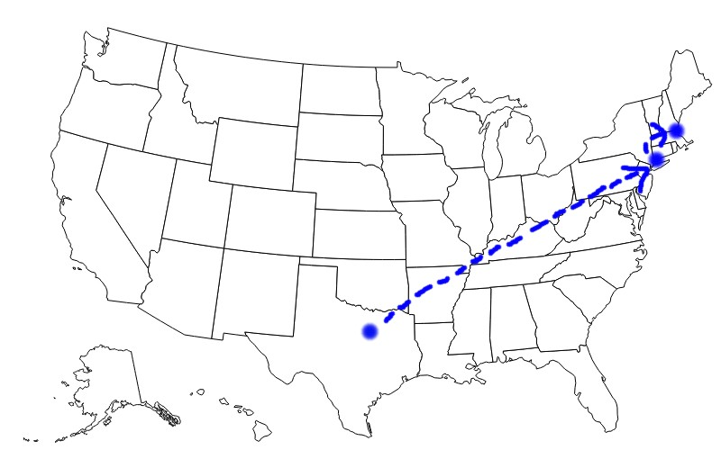

This section is all who I am. I'll let you know a good amount about how I grew up and the people and places that've influenced my the most. I'm hoping that this gives you a helpful image of where I come from so that you can understand where I am now and where I'm going. To see the road ahead you must have first travelled the road behind you.
In May 2021, I was baptized. This came after reading the bible consistently for almost a year and being involved with Northeastern's catholic center. I was raised without any real faith, just considering myself agnostic all my life. After a few months of reading and talking to my close friend at the time (who is currently my beautfiul girlfriend) who grew up in the orthodox church, I kind of just found myself believing in Jesus and feeling bad for the sins I've committed in my past. That was the day I knew I was Christian and began pursuing Christ ever since then.
I have a pretty small family. At home it was always just my parents, my older sister Megan, and I. My dad worked from home as a freelance writer so he was probably the most influential person of my whole life. Growing up my mom worked high up in Pepsi-Cola's human resources department. She worked long hours and went on a lot of business trips but towards the end of elementary school she decided to switch to a smaller company where she could have more of an impact and also spend more time with our family. We also always had a pet dog. Before Megan and I were born my parents had a yellow lab named Kiner, but he passed when I was only about five years old. Then we had another yellow lab named Murphy who I absolutely loved. He was a real food shark but he was a great friend. He passed just before I started college last year, and since then we adopted a dog we named Dinger. He's smaller than Kiner and Murphy and he's a real snuggler.
I was born in Dallas Texas in 2002. My family lived there only until I was two years old, then we moved to the town my father grew up in, Stamford Connecticut. That's where I really grew up. Went through all of pre-k to high school there until we moved again because of my mom's job in fall 2020. Now we live in Andover Massachussetts while I stay mostly in Boston for school.
Yes I made this picture myself, no I am not an artist.